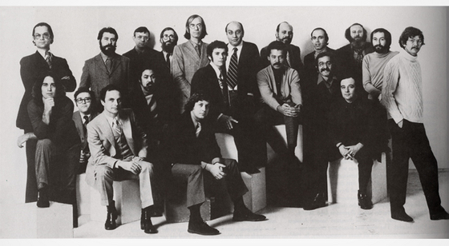
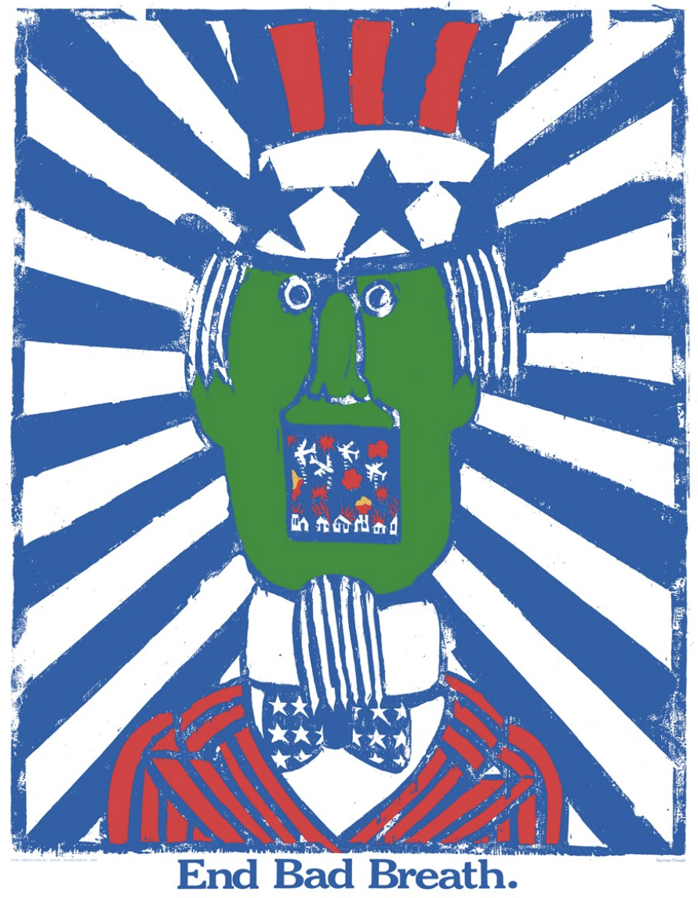
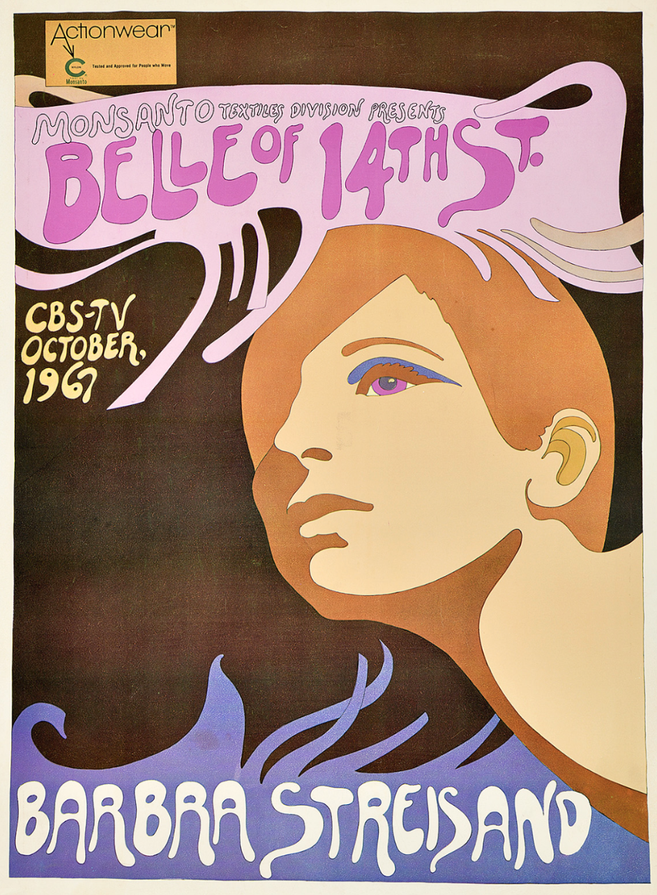
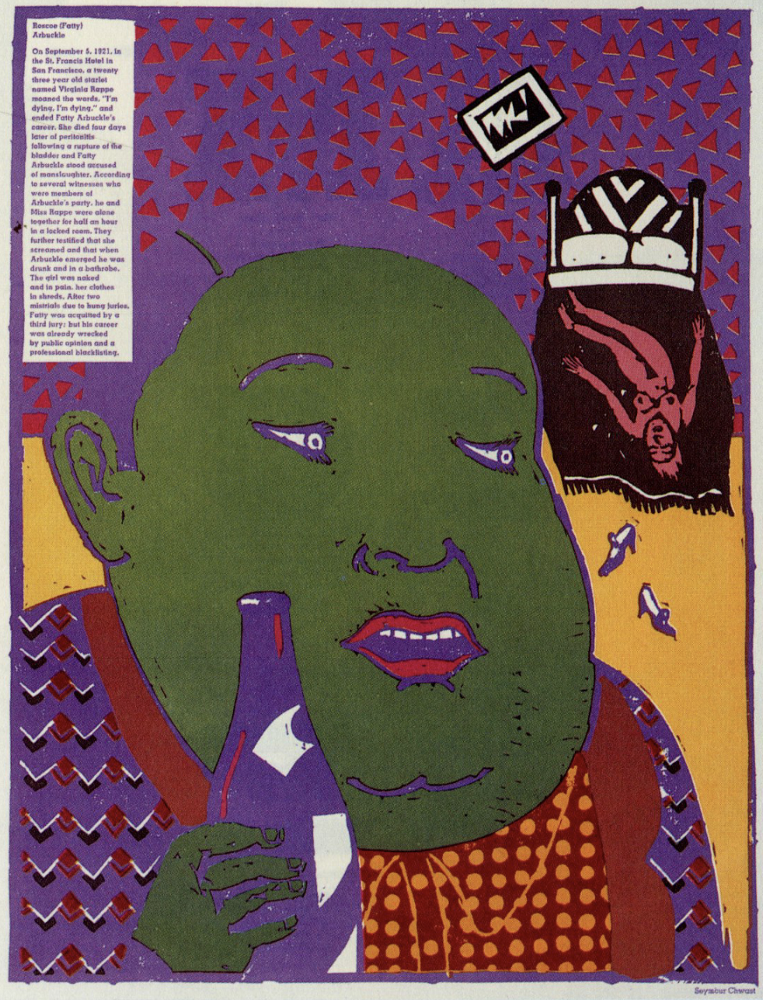
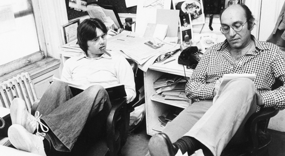
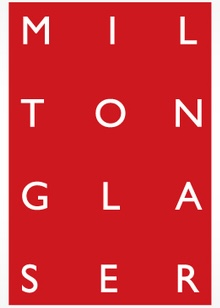

Career
In 1954, Glaser co-founded Pushpin
Studios with Seymour Chwast and
Edward Sorel. The studio had a strong
influence on the direction of graphic
design in the world. Most of the
designs that came out of Pushpin
Studios were illustrations, and this
blurred the lines between art and
design at the time. Their designs were
inspired by Art Nouveau, Chinese ink
wash drawings, and German woodcuts.




In 1968, him and Clay Felker founded New York
Magazine, and Glaser was president and design
director of the magazine until 1977. And in
1983, Glaser and Walter Bernard created
WBMG—a publication design studio in NYC.
They designed more than 50 global magazines,
newspapers, and periodicals around the world.

In 1974, Glaser established Milton
Glaser Inc., a Manhattan studio
that produced print graphics
including logos, stationery,
brochures, and signage. They
were most known for developing
the iconic “I Heart New York” logo.
